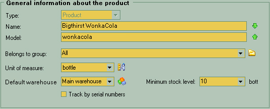
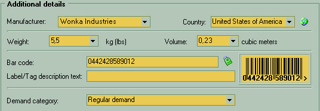
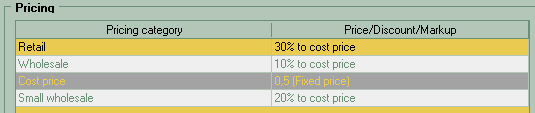
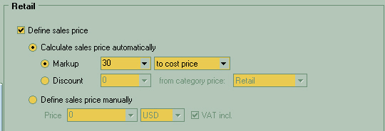
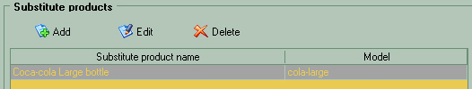
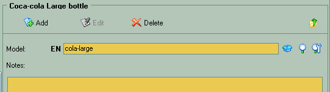
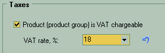
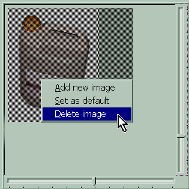

 The topmost part of the general section is the main product details. Here you see that you editing the product (the "Type" label). This is because this form is universally used to edit the product groups or categories also. Then goes the name and model. Think of it as a presentational and accounting parts. The name of product is entirely for clients and model is for your sales and warehouse staff to precisely track what kind of product it is. You can use the right side green arrows to copy text from one to another field such avoiding double typing. Belongs to group is where you select the group or category for this product. Click on Select unit of measure from predefined list but don't forget - you may click on icon to add new in place Default warehouse is the starting place for the incoming lots and outgoing sales. It is just default place to store or look, not a mandatory setting. Minimum stock level set the lower limit below which there will be warning issued to make new order to the supplier. Check "Track by serial numbers" if each item this kind bearing unique serial number. This is the case for electronic equipment and other precise stuff |
|||||
 In the Manufacturer field you can type freely or choose from the drop-down list of previous names. The "Country" type have it's own directory where you define the originating places for the products. Weight and volume used just for the storage and transporting reference. Bar code can be typed just through or if this product does not have one yet then click on button to make it auto generated from the name of the product. Label/Tag description is used for printing additional short description on the price labels that's being sticked to the product in the shopping hall Demand category is used almost to prioritize the ordering from supplier. |
|||||
 The pricing table lists each defined pricing category with it's respective method of value calculation to the right. You can click on any line to edit the specifics for this particular product. |
|||||
 When you click on the category in the tree or in the summary table of categories above you will see the detailed settings for this one. First of all, check the "Define sales price" to actually override this price category settings for this product only. Then chose to "Calculate price automatically" to manipulate percentages or "Define sales price manually" to set a fixed price immune to changes by other means. Then, the Markup and Discount works just similar with regard to were it adding or subtracting the set percentage. You may select from two base prices to markup or discount on it:
|
|||||
 This useful feature of "substitute products" can help a point of sales people to quickly present different choices of similar to the already chosen or desired product(s) to the client in case of doubts, curiosity or just plain out-of-stock condition. Here is the table of previously defined products that you can add or remove by all means necessary When you double-click on the table line or the "Edit" |
|||||
 In the "model" field you may type the model of looked substitute product or click the directory buttons on the right to choose from there. Also you may enter any note you like to detail, say the similarities or differences between this one and main product |
|||||
 |
The "Taxes" part is very small and easy. It's now concerning about the VAT only. |
||||
 |
The "Product images" section is simply the gallery of JPEG images used for price-list printing and Web-Stores. It's functionality resembles of the default system behaviour, so you should not notice any annoying difficulties operating it. All you'll need is to optionally select the already loaded images and right-click to bring up the short menu of available actions. Note, the actual adding to or removing images from database is performed only when you click "OK" or "Apply" button at the bottom of the whole editing form. |
||||